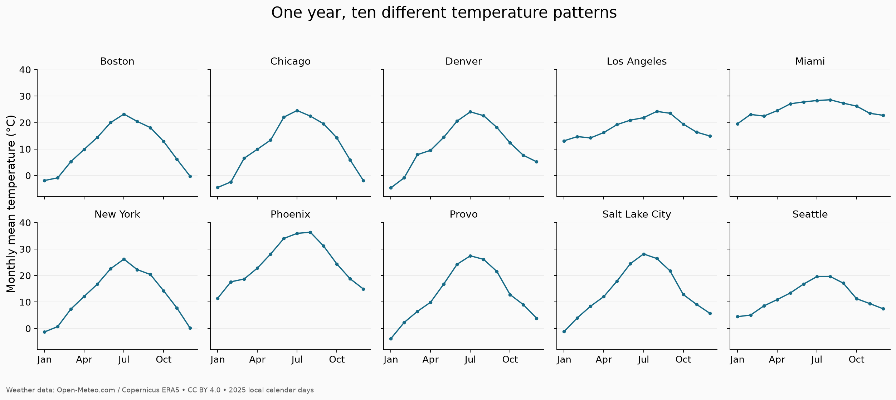
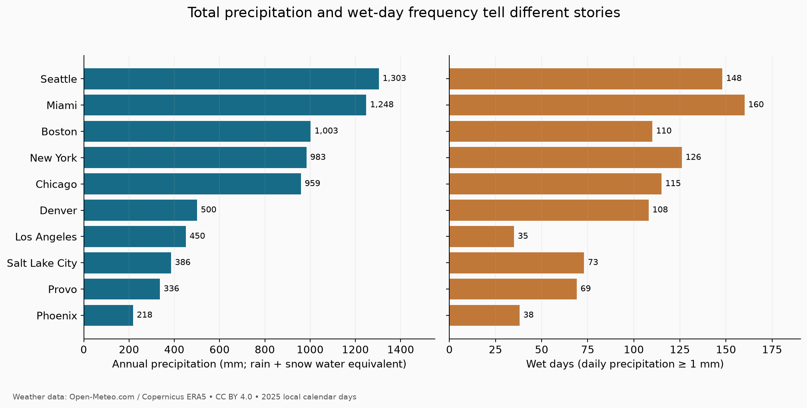
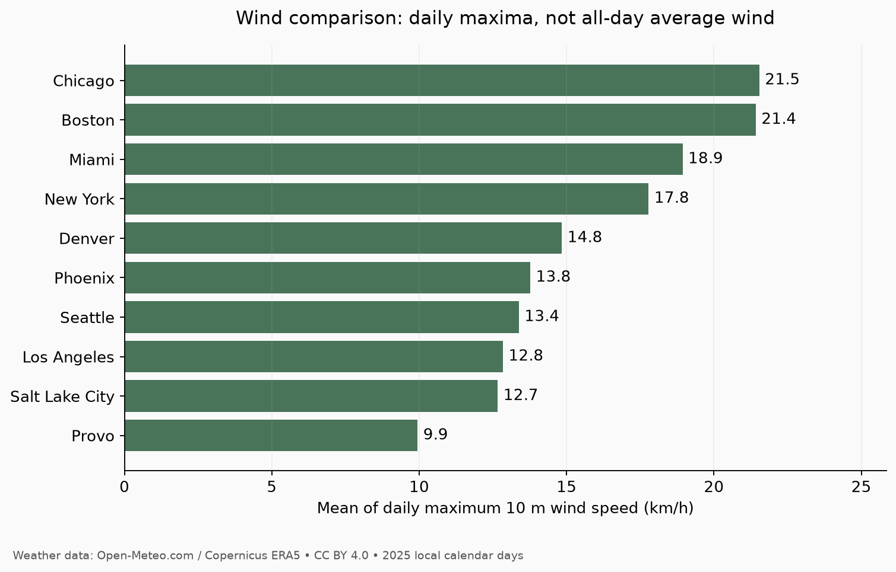

What does “different weather” actually mean?
Weather affects travel plans, outdoor activities, and everyday routines. But comparing cities with a single label, such as “rainy” or “warm,” hides important differences. A city can receive a large amount of precipitation in relatively few days. Two cities can have similar annual temperatures while experiencing very different winters.
My question: How did temperature, precipitation, and wind patterns differ across ten U.S. cities in 2025?
Following my proposal, I selected Provo, Salt Lake City, Seattle, Los Angeles, Phoenix, Denver, Chicago, New York, Miami, and Boston. These locations provide useful contrasts between coastal, inland, northern, and southern settings. They are a deliberate selection, so the results describe these cities rather than representing the entire country.
From two APIs to one dataset
I used Python's requests and pandas libraries with Open-Meteo. The Geocoding API supplies location information, while the Historical Weather API supplies daily weather. A similar project can start with these four steps:
- Query each city, then verify its country and state. City names alone can identify the wrong location.
- Use the returned coordinates and local time zone to request January 1–December 31, 2025. Explicitly select Celsius, millimeters, and kilometers per hour.
- Request daily maximum, minimum, and mean temperature, total precipitation, and maximum wind speed. I fixed the model to ERA5 for all cities.
- Combine the daily records, attach city information, and derive month, season, daily temperature range, and a wet-day indicator.
The result is 3,650 rows and 15 variables: 365 dates for each of ten cities. Each observation represents one city-day. This is an original curation because the code joins location and weather responses and creates additional variables for comparison. The separate code and data repository includes documented scripts, a data dictionary, raw responses, processed CSV files, and figures.
The collection script caches responses, records request URLs and retrieval times, pauses between requests, and retries temporary failures with backoff. A fresh collection uses twenty successful HTTP requests. Running it with --offline rebuilds the dataset from saved responses, making the published analysis reproducible without repeatedly contacting the service.
Permission and quality before analysis
I checked Open-Meteo's terms and licence before collection. The free service permits noncommercial educational use within its rate limits. API data can be shared under CC BY 4.0 with attribution, a licence link, and an explanation of changes. I credit Open-Meteo, Copernicus ERA5, and GeoNames and identify the transformations in the repository. Only public city-level environmental data are collected; no personal information or private API keys are involved.
Validation found zero missing cells and zero duplicate city-date pairs. Every city had all 365 expected dates. The script also checked units, nonnegative precipitation and wind, and whether minimum temperature ≤ mean temperature ≤ maximum temperature. No observations were dropped or imputed. Passing these checks establishes a structurally complete dataset, but does not guarantee that every estimate matches local conditions.
Temperature: annual averages hide seasonal contrasts
Miami had the highest annual mean temperature, 25.13°C, followed by Phoenix at 24.56°C. Boston was lowest at 10.70°C. However, Phoenix's average daily maximum was 31.22°C, compared with Miami's 27.32°C. The meaning of “warmest” therefore depends on whether we compare daily means or daytime highs.

Chicago's summer mean exceeded its winter mean by 25.99°C; Miami's difference was only 6.52°C. Provo also had a large difference, 25.24°C. Here, summer means June–August, and winter combines January–February and December within 2025. These are descriptive seasonal comparisons, not estimates of long-term climate.
Precipitation: amount and frequency are different
Seattle recorded the highest estimated annual precipitation, 1,303.3 mm, slightly above Miami's 1,248.1 mm. Yet Miami had more wet days: 160 versus 148, using a threshold of at least 1 mm per day. Phoenix had the lowest annual total, 217.6 mm.

Los Angeles illustrates why both measures matter. Its 450.5 mm annual total was more than twice Phoenix's, despite having only 35 wet days compared with Phoenix's 38. A traveler concerned about how often precipitation interrupts outdoor plans might prefer a frequency measure over an annual total.
Wind and the limits of this comparison
Chicago had the highest mean daily maximum wind speed, 21.54 km/h, narrowly above Boston at 21.42 km/h. Provo was lowest at 9.95 km/h. This statistic averages daily maxima at 10 meters; it is not average all-day wind speed or maximum gust speed.

ERA5 is gridded reanalysis, combining observations with modeling. One grid location cannot capture every neighborhood, mountain slope, or local storm. Consecutive days are also related, and one year cannot establish climate trends. The main lesson is that a useful comparison needs clearly defined measures: mean versus maximum temperature, precipitation amount versus frequency, and daily maximum versus average wind. A next step would be repeating this workflow across several years to see which patterns persist.